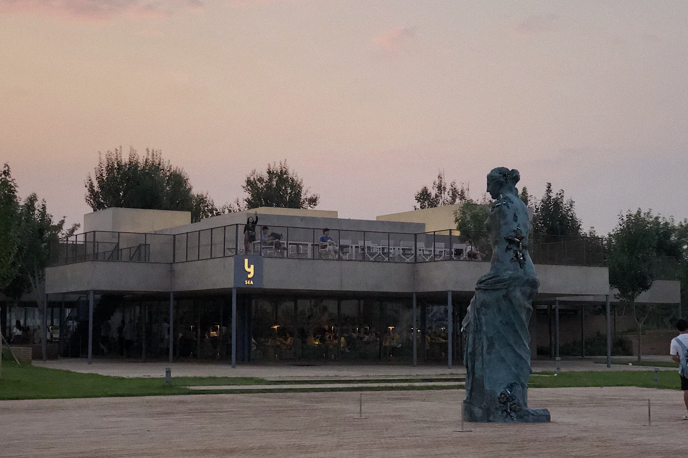
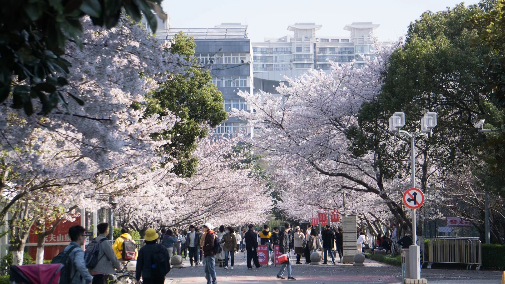
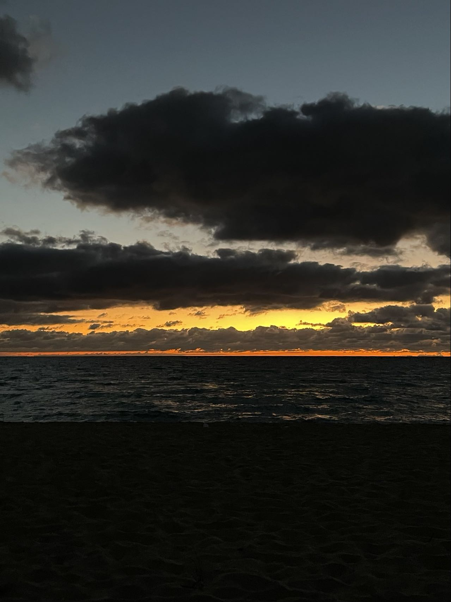
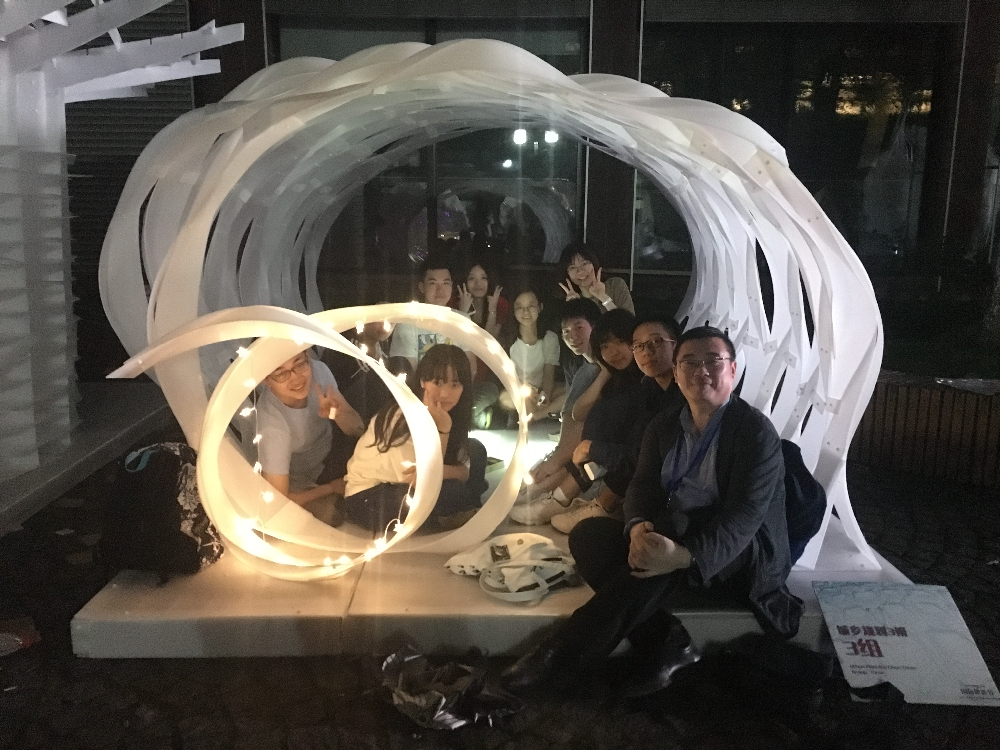

Design
DiDi Select
Gallery
About
Photography & Competitions
When I'm not working, you can find me capturing bueatiful scenes using my phone and camera. "the truth of the photographer's eyes is the things that their photos show."
Thanks to everyone who has been a part of the journey.



